소방설비기사(기계분야) (2004-05-23 기출문제)
1과목: 소방원론
1. 건축물 화재시 방화관리자 등이 사용할 수 있는 소방시설로는 적합하지 않은 것은?
- 소화기
- 연결송수관설비
- 옥내소화전설비
- 청정소화약제 소화설비
(정답률: 66%)

2. 화재 발생시 인명을 구조하는 장구로서 직접 활용할 수 없는 것은?
- 무선통신 보조설비
- 완강기
- 수직 구조대
- 구조대
(정답률: 74%)
3. 목조건축물과 내화구조건축물의 화재성상에 대한 설명중 옳지 않은 것은?
- 내화구조건축물의 화재 진행상황은 초기→ 성장기→최성기→ 종기의 순서로 진행된다.
- 목조건축물은 공기의 유통이 좋아 순식간에 플래시 오버에 도달하고 온도는 약 1000℃이상에 달한다.
- 내화구조건축물은 견고하여 공기의 유통조건이 거의 일정하고 최고온도는 목조의 경우보다 낮다.
- 목조건축물은 최성기를 지나면 급속히 타버리고, 공기의 유통이 좋으므로 장시간 고온을 유지한다.
(정답률: 71%)
4. 다음중 소방대상물별 가연물과 적응소화설비와의 관계가 잘못된 것은?
- 전기실-물분무소화설비
- 제1류위험물 알칼리금속과산화물-탄산수소염류 분말 소화설비
- 제2류위험물 인화성고체-스프링클러설비
- 제3류 금수성물질-포소화설비
(정답률: 40%)
5. 공기중 산소농도를 몇 % 정도까지 감소시키면 연소상태의 중지 및 질식소화가 가능하겠는가?
- 10∼15
- 15∼20
- 20∼25
- 25∼30
(정답률: 63%)
6. 연소의 3요소가 아닌 것은?
- 가연물
- 소화약제
- 산소공급원
- 점화원
(정답률: 86%)
7. 피난시설의 안전구획 설정과는 관련이 없는 것은?
- 중간 피난층
- 복도
- 계단부속실(전실)
- 계단
(정답률: 69%)
8. 건물화재시 패닉(panic)의 발생원인과 직접적인 관계가 없는 것은?
- 연기에 의한 시계 제한
- 유독가스에 의한 호흡 장애
- 외부와 단절되어 고립
- 건물의 가연 내장재
(정답률: 84%)
9. 문틈으로 연기가 새어 들어오는 화재를 발견할 때의 안전 대책으로 잘못된 것은?
- 빨리 문을 열고 복도로 대피한다.
- 바닥에 엎드려 숨을 짧게 쉬면서 대피대책을 세운다.
- 문을 열지 않고 수건 등으로 문틈을 완전히 밀폐한 후 창문을 열고 화재를 알린다.
- 창문으로 가서 외부에 자신의 구원을 요청한다.
(정답률: 74%)
10. 투명 용기, 물이 담긴 병 등이 렌즈상의 작용으로 인하여 태양광선이 굴절 또는 반사할 때 생기는 열에너지에 의해 출화되는 화재는?
- 표면(表面)화재
- 심부(深部)화재
- 자연(自然)화재
- 수렴(收斂)화재
(정답률: 39%)
11. 목재가 탈 때 불꽃이 발생하는 주된 이유로 옳은 것은?
- 목재의 주된 구성원소인 탄소성분이 급격히 연소하기 때문이다.
- 목재를 구성하는 고분자물질이 열분해하여 목재표면에서 가스상태로 방출되어 연소하기 때문이다.
- 목재내부에 존재하는 응축물(타-르)이 목재표면밖으로 증발하여 연소하기 때문이다.
- 목재의 표면에는 목재마다 정도의 차이는 있으나 소나무의 송진과 유사한 불꽃연소성을 가진 물질이 항상 존재하기 때문이다.
(정답률: 47%)
12. 경유화재가 발생할 때 주수소화가 부적당한 이유는?
- 경유는 물보다 비중이 가벼워 물위에 떠서 화재 확대의 우려가 있으므로
- 경유는 물과 반응하여 유독가스를 발생하므로 다. 경유의 연소열로 인하여 산소가 방출되어 연소를 돕기 때문에
- 경유의 연소열로 인하여 산소가 방출되어 연소를 돕기 때문에
- 경유가 연소할 때 수소가스를 발생하여 연소를 돕기 때문에
(정답률: 81%)
13. 전기화재의 발생 가능성이 가장 낮은 부분은?
- 코드접촉부
- 전기장판
- 전열기
- 배전용차단기
(정답률: 89%)
14. 상온에서 무색의 기체로서 암모니아와 유사한 냄새를 가지는 물질은?
- 에틸벤젠
- 에틸아민
- 산화프로필렌
- 사이클로프로판
(정답률: 34%)
15. 자연발화가 일어나기 쉬운 것은?
- 장뇌유
- 송근유
- 아마인유
- 테레인유
(정답률: 50%)
16. 불꽃연소와 관계가 없는 것은?
- 가연성 성분이 기체상태에서 연소하고 있다.
- 연쇄반응이 일어난다.
- 다이아몬드를 연소시킨다.
- 연소시 발열량이 매우 크다.
(정답률: 75%)
17. 다음중 특수가연물로 볼 수 없는 것은?
- 석탄
- 면화류
- 고무류
- 유황
(정답률: 54%)
18. 다음 설명중 옳은 것은?
- 과염소산 등의 산화성액체는 위험물이 아니다.
- 흑색화약은 황과 숯만으로 제조된다.
- 황인의 소화방법으로는 주수소화가 효과적이다.
- 알킬알루미늄 소화제로는 젖은 모래가 적합하다.
(정답률: 41%)
19. 다음중 연소한계가 가장 넓은 것은 어느 물질인가?
- 에틸렌
- 프로판
- 메탄
- 수소
(정답률: 63%)
20. 화재의 분류방법중 유류화재를 나타내는 것은?
- A급 화재
- B급 화재
- C급 화재
- D급 화재
(정답률: 75%)
2과목: 소방유체역학
21. 다음 중 점성계수 μ 의 차원은 어느 것인가?
- [ML-1T-2]
- [ML-2T-1]
- [M-1L-1T]
- [ML-1T-1]
(정답률: 27%)
22. 그림과 같은 고정 베인(vane)에 대하여 제트가 속도 V,유입각 α , 유출각 β 로 작용할 때 베인이 중심선 0-0방향으로 받는 힘 kx는? (단, Q는 유량,γ는 유체비중량)
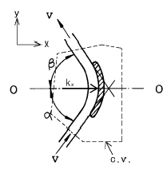
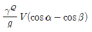
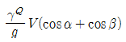
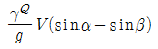
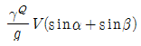
(정답률: 47%)
23. 완전가스의 폴리트로픽 과정에 대한 엔트로피 변화량을 나타낸 것은? (단, Cp:정압비열, Cv:정적비열, Cn:폴리트로픽 비열이다)
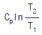
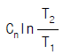
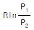
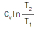
(정답률: 42%)
24. 그림과 같이 곧은 원관속을 점성유체가 층류를 이루고 정상적으로 흐르고 있다. 전단력 τ의 크기를 바르게 나타낸 것은?
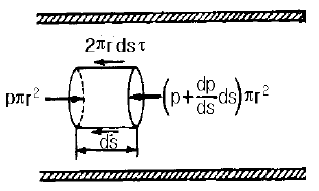
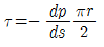
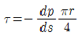
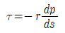
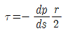
(정답률: 14%)
25. 부자(float)의 오르내림에 의해서 배관 내의 유량 및 유속을 측정하는 기구의 명칭은?
- 피토관(pitot tube)
- 로타미터(rotameter)
- 오리피스(orifice)
- 벤튜리미터(venturi meter)
(정답률: 44%)
26. 온도가 37.5℃인 원유가 0.3 m3/s의 유량으로 원관에 흐르고 있다. 하임계 레이놀즈수가 2100일 때 층류로 흐를수 있는 관의 최소지름은 몇 m 인가? (단, 이 때 원유의 동점성계수는 6 x 10-5m2/s 이다.)
- 2.25
- 2.75
- 3.03
- 4.⑤
(정답률: 41%)
27. 직경 20 cm 의 소화용 호스에 물이 392 N/s 로 흐른다. 이때의 평균유속은 몇 m/s 인가?
- 2.96
- 4.34
- 3.68
- 1.27
(정답률: 43%)
28. 펌프의 압력계가 출구쪽에서 440 kPa, 입구쪽에서 -30 kPa 을 나타내고 출구쪽 압력계는 입구쪽의 것보다 60cm 높은 곳에 설치되어 있으며, 흡입관과 송출관의 지름은 같다. 도중에 에너지 손실이 없고 펌프의 유량이 3m3/min일 때 펌프의 동력은 약 몇 kW 인가?
- 22
- 24
- 26
- 28
(정답률: 49%)
29. 할로겐 화합물 소화설비에서 할론1211 약제의 분자식은?
- CBrClF2
- CBr2ClF
- CCl2BrF
- BrC2ClF
(정답률: 60%)
30. 커다란 탱크에서 밑면으로 물이 일정 유량(0.⑤ m3/s)이 흘러나가고, 위에서는 단면적이 0.025 m2, 분출속도가 8m/s의 노즐을 통하여 탱크로 유입되고 있다. 그러면 탱크에 축적되는 물의 양은 몇 m3/s 인가?
- 0.15
- 0.0145
- 0.3
- 0.03
(정답률: 38%)
31. 10℃와 300℃ 사이에서 작동하는 카르노싸이클의 열효율은 얼마인가?
- 45.6%
- 50.6%
- 70.5%
- 96.7%
(정답률: 24%)
32. 뚜껑이 닫힌 밀폐 탱크 속에 비중이 0.8 인 기름이 깊이 3 m 만큼 차있고, 그 위에 가스가 100 kPa 의 압력으로 누르고 있다면, 탱크 밑면이 받는 유체압은 몇 kPa 인가?
- 123.5
- 182.6
- 216.4
- 274.2
(정답률: 31%)
33. A, B급 화재용 소화기의 소화능력 시험에 관한 설명으로 틀린 것은?
- 소화기를 조작하는 사람은 방열복을 착용해야 한다.
- 소화시험은 무풍상태에서 실시하여야 한다.
- 소화는 검정기술기준에서 정하고 있는 화재모형에 점화 후 1분 후에 소화를 실시한다.
- 소화는 검정기술수준에서 정하고 있는 화재모형에 점화 후 1분 후에 소화를 실시하여 1분이내에 재연소가 없을 때 완전히 소화가 된 것으로 판정한다.
(정답률: 22%)
34. 브르돈관 압력계(Bourdon gage)에서 압력은 어떻게 되는가 ?
- 액주의 중량과 평형을 이룬다.
- 탄성력과 평형을 이룬다.
- 마찰력과 평형을 이룬다.
- 절대압력과 평형을 이룬다.
(정답률: 40%)
35. 분말소화약제의 열분해 반응식 중 틀린 것은?
- 2KHCO3 → K2CO3 + CO2 + H2O
- 2NaHCO3 → 2NaCO3 + 2CO2 + H2O
- NH4H2PO4 → H3PO4 + NH3
- 2KHCO3 + (NH2)2CO → K2CO3 + 2NH3 + 2CO2
(정답률: 45%)
36. 이산화탄소를 방사하여 산소의 체적농도를 12% 되게 하려면 상대적으로 이산화탄소의 농도는 얼마가 되어야 할 것인가?
- 25.40%
- 28.70%
- 38.35%
- 42.86%
(정답률: 60%)
37. 다음 중 캐비테이션 방지책으로 잘못된 것은?
- 펌프의 설치 높이를 될 수 있는대로 낮춘다.
- 양흡입 펌프를 사용한다.
- 회전차를 수중에 완전히 잠기게 한다.
- 펌프의 회전수를 높게 한다.
(정답률: 57%)
38. 길이가 400 m 이고 유동단면이 20 cm x 30 cm인 직사각형관에 물이 가득 차서 평균속도 3 m/s로 흐르고 있다. 이때 손실수두는 몇 m 인가 ? (단, 관마찰계수는 0.01 이다.)
- 2.38
- 4.76
- 7.65
- 9.52
(정답률: 35%)
39. 이상유체에 대한 다음 설명중 올바른 것은?
- 압축성 유체로서 점성이 있다.
- 비압축성 유체로서 점성이 있다.
- 압축성 유체로서 점성이 없다.
- 비압축성 유체로서 점성이 없다.
(정답률: 55%)
40. 표면적이 같은 1000 K의 물체와 2000 K의 물체에서 복사되는 에너지 크기의 비는?
- 1:4
- 1:8
- 1:16
- 1:32
(정답률: 55%)
3과목: 소방관계법규
41. 석유판매취급소의 작업실의 출입구에는 바닥으로부터 몇[cm] 이상의 턱을 설치하여야 하는가?
- 10
- 15
- 20
- 25
(정답률: 50%)
42. 바닥면적이 기준면적이상일 경우라도 자동화재속보설비를 설치하지 않아도 되는 시설은?
- 판매시설
- 숙박시설
- 의료시설
- 공연시설
(정답률: 32%)
43. 소방본부장 또는 소방서장은 화재의 예방 또는 진압대책을 위하여 소방대상물의 검사를 할 수 있으나 반드시 관계인의 승낙이 있거나 화재발생의 우려가 현저하여 긴급을 요할 때에만 할 수 있는 곳은?
- 제조공장
- 전시장
- 교회
- 개인의 주거
(정답률: 55%)
44. 소방상 필요할 때 소방본부장.소방서장 또는 소방대장이할 수 있는 명령에 해당되는 것은?
- 화재현장에 이웃한 소방서에 소방응원을 하는 명령
- 그 관할구역안에 사는 사람 또는 화재현장에 있는 사람으로 하여금 소화에 종사하도록 하는 명령
- 관계 보험회사로 하여금 화재의 피해조사에 협력하도록 하는 명령
- 소방대상물의 관계인에게 화재에 따른 손실을 보상하게 하는 명령
(정답률: 63%)
45. 위험물저장소로서 옥내저장소의 하나의 저장창고 바닥면 적은 갑종위험물을 저장하는 창고에 있어서는 몇 m2 이하로 하여야 하는가?
- 300
- 500
- 800
- 1000
(정답률: 50%)
46. 소방시설의 종류중 "소화활동설비"가 아닌 것은?
- 상수도소화용수설비
- 제연설비
- 연결송수관설비
- 연결살수설비
(정답률: 59%)
47. 소방본부장 또는 소방서장이 불의의 재해 그 밖의 위급한 상태에서 즉시 필요한 처치를 하지 아니하면 그 생명을 보존할 수 없는 등 위급한 환자를 응급처치하거나 의료기관에 긴급히 이송하기 위하여 편성, 운영할 수 있는 조직은?
- 의용소방대
- 구급대
- 구조대
- 민방위대
(정답률: 55%)
48. 화학소방자동차의 소화능력의 기준으로 포말을 방사하는 차에 있어서는 포수용액의 방사능력이 매분 몇 리터이상 이어야 하는가?
- 1000
- 2000
- 3000
- 4000
(정답률: 33%)
49. 아파트로서 층수가 몇 층 이상인 것은 그 층이상의 층에 스프링클러설비를 설치하여야 하는가?
- 11
- 13
- 16
- 20
(정답률: 19%)
50. 소방대상물로서 지정문화재는 연면적 몇 m2 이상인 경우에 옥외소화전설비를 설치하여야 하는가?
- 500
- 1000
- 1500
- 2000
(정답률: 40%)
51. 옥내저장소의 구조 및 설비에서 저장창고는 위험물 저장을 전용으로 하는 독립된 건축물로 하고, 하나의 저장창고의 바닥면적은 을종위험물을 저장하는 창고인 경우 몇 m2 이하로 하여야 하는가?(관련 규정 개정전 문제로 여기서는 기존 정답인 2번을 누르면 정답 처리됩니다. 자세한 내용은 해설을 참고하세요.)
- 1000
- 1500
- 2000
- 2500
(정답률: 54%)
52. 다음중 위험물제조소의 배출설비의 배출능력은 1시간당 배출장소 용적의 몇배 이상 인가?
- 5배
- 10배
- 15배
- 20배
(정답률: 29%)
53. 위험물탱크안전성능 시험자가 반드시 갖추어야 할 장비는?
- 수압기
- 비중계
- 검량계
- 절연저항계
(정답률: 52%)
54. 소방신호에서 화재예방.소화활동. 소방훈련을 위하여 사용되는 신호의 종류와 방법은 무엇으로 정하는가?
- 지방자치령
- 대통령령
- 행정자치부령
- 치안본부령
(정답률: 43%)
55. 특수장소에 대한 소방계획은 누가 작성하는가?
- 소방서장
- 방화관리자
- 소방안전협회장
- 의용소방대장
(정답률: 39%)
56. 위험물제조소의 옥외에 있는 하나의 취급 탱크에 설치하는 방유제의 용량은 당해 탱크 용량의 몇 % 이상으로 하는가?
- 50
- 60
- 70
- 80
(정답률: 31%)
57. 방화관리업무등의 강습은 연 몇회 실시 하는가?
- 2회
- 4회
- 5회
- 수시로
(정답률: 50%)
58. 형식승인대상 소방용 기계기구가 아닌 것은?
- 송수구
- 휴대용 비상조명등
- 소방펌프
- 방염제
(정답률: 49%)
59. 화재가 발생하였을 때 소방본부장 또는 소방서장이행하는 화재조사의 내용을 옳게 설명한 것은?
- 화재의 성상과 화재로 인한 인명의 피해
- 화재의 원인과 화재 또는 소화로 인하여 생긴 손해
- 화재의 원인을 조사하기 위한 화재 감식
- 화재로 인한 인적 및 물적 손해 정도
(정답률: 32%)
60. "무창층"이라 함은 지상층 중 피난 또는 소화활동상 유효한 개구부의 면적의 합계가 그 층의 바닥면적의 얼마이하가 되는 층을 말하는가?
- 1/20
- 1/30
- 1/40
- 1/50
(정답률: 56%)
4과목: 소방기계시설의 구조 및 원리
61. 5층 건물에 옥내소화전이 1층에 3개, 2층이상에 각각 2개 씩 총 11가 설치 되었을 경우, 수원의 수량 산출방법으로 옳은 것은?(2021년 04월 01일 개정된 규정 적용됨)
- 3개 x 2.6m3 = 7.8m3
- 2개 x 2.6m3 = 5.2m3
- 11개 x 2.6m3 = 28.6m3
- 5개 x 2.6m3 = 13.0m3
(정답률: 57%)
62. 옥외소화전 설비의 호스접결구는 소방대상물의 각 부분으로 부터 하나의 호스접결구까지 몇 m이하가 되도록 설치 하여야 하는가?
- 보행거리 25m
- 보행거리 30m
- 수평거리 25m
- 수평거리 40m
(정답률: 67%)
63. 연결송수관 설비의 가압송수장치는 최소 얼마 이상의 토출량으로 하여야 하는가?
- 600 ℓ /min
- 1,200 ℓ /min
- 2,400 ℓ /min
- 3,600 ℓ /min
(정답률: 30%)
64. 연결 살수설비 전용 헤드를 사용하는 경우 배관의 구경이 50mm 이면 부착하는 개방형 헤드수는?
- 2개
- 3개
- 4개 또는 5개
- 6개이상 10개이하
(정답률: 55%)
65. 물분무 소화 설비에서 배관의 마찰 손실을 구할 때 사용 되는 하젠 - 윌리엄스 공식은 다음과 같다.
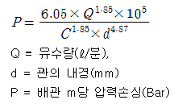
물분무 소화설비의 배관으로 아연도금강관(백관)을 사용할 때 이 식에서 나타나는 C의 값은 얼마로 취하게 되는가?- 80
- 100
- 120
- 140
(정답률: 35%)
66. 체적 50m3의 변압기실에 전역 방출방식의 할로겐화합물소화설비를 설치하는 경우 할론 1301의 저장량은 최소 몇[kg] 이상이어야 하는가? (단, 변압기실에는 자동 폐쇄장치가 부착된 개구부가 있음.)
- 13
- 16
- 19
- 22
(정답률: 45%)
67. 소화용수 설비에 설치하는 채수구는 지면으로부터 높이는 얼마인가?
- 0.2미터 이상, 1.2미터 이하
- 0.5미터 이상, 1.2미터 이하
- 0.5미터 이상, 1미터 이하
- 0.2미터 이상, 1미터 이하
(정답률: 55%)
68. 피난기구 설치위치로서 가장 적당한 것은? (단, ⊙표는 설치위치)
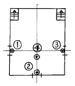
- ①
- ②
- ③
- ④
(정답률: 55%)
69. 포소화 설비의 자동 기동장치에 사용하는 감지기와 폐쇄형 스프링클러 헤드에 대한 내용 중 잘못된 것은?
- 감지기는 열에 의하여 감지되는 것을 사용한다.
- 스프링클러 헤드는 표시온도가 79℃ 미만인것을 사용한다.
- 1개의 스프링클러 헤드 경계 면적은 20m2 이하로 할 것
- 스프링클러 헤드의 부착면 높이는 바닥으로부터 3m이하이어야 한다.
(정답률: 46%)
70. 개방형 스프링클러 설비에서 하나의 방수구역의 경우 담당하는 헤드 갯수는 몇개 이하로 하여야 하는가?
- 60
- 50
- 40
- 30
(정답률: 56%)
71. 소방 대상물 및 위험물별 소화기구의 적응성에 관한 내용중 부적절한 것은?
- 건축물, 기타 공작물 - 인산염류 분말소화기
- 전기실, 통신기기실 - 이산화탄소 소화기 또는 하론소화기
- 제5류 위험물 - 마른모래 또는 팽창질석/팽창진주암
- 제6류 위험물 - 하론 소화기 또는 이산화탄소 소화기
(정답률: 27%)
72. 이산화탄소 소화설비의 소화약제 저장용기와 선택밸브 또는 개폐밸브 사이에 설치하는 안전장치의 작동압력은 얼마이어야 하는가?
- 120 - 180kgf/cm2
- 120 - 200kgf/cm2
- 170 - 200kgf/cm2
- 170 - 250kgf/cm2
(정답률: 22%)
73. 스프링클러헤드 설치장소의 최고 주위온도가 1⑤℃인 경우에 폐쇄형 스프링클러헤드는 표시온도가 섭씨 몇도인것을 사용하여야 하는가?
- 79도 이상, 121도 미만
- 121도 이상, 162도 미만
- 162도 이상, 200도 미만
- 200도 이상
(정답률: 56%)
74. 분말 소화설비 배관이 그림과 같이 설치되었을 때 A, B배관의 최소 관경은 각각 얼마 이상이 적당한가? (단, 각 분사노즐에서의 분사유량은 0.8kg/sec이다.)
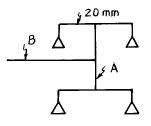
- 32mm, 40mm
- 25mm, 40mm
- 25mm, 32mm
- 20mm, 32mm
(정답률: 34%)
75. 폐쇄형 스프링클러 헤드에 대하여 급격한 수압을 고려해야하는 시험은?
- 수격시험
- 강도시험
- 진동시험
- 방수량시험
(정답률: 61%)
76. 펌프 본체 중의 액체가 외부로 누설되는 것을 방지하기위한 장치와 관계 없는 것은?
- 글랜드패킹 방식
- 메케니칼시일 방식
- 오일시일 방식
- 다이아프램 방식
(정답률: 62%)
77. 가로6m, 세로6m, 높이4m의 윗면이 개방된 각형 경유저장탱크에 1종분말약제를 사용하여 국소방출방식의 분말소화설비를 설치 할 경우 약제저장량(kg)으로 맞는 것은?
- 316.80
- 348.48
- 2⑤.92
- 142.56
(정답률: 34%)
78. 소화기 설치시 전기설비가 있는 곳은 추가하여 소화기를 비치한다. 산출방법 중 옳은 것은?
- 당해 바닥면적 ÷ 50m2 = 소화기 갯수
- 당해 바닥면적 ÷ 50m2 = 소화기 능력단위
- 당해 바닥면적 ÷ 25m2 = 소화기 갯수
- 당해 바닥면적 ÷ 25m2 = 소화기 능력단위
(정답률: 38%)
79. 제연설비의 배출기와 배출풍도에 관한 설명 중 틀린것은?
- 배출기와 배출풍도의 접속부분에 사용하는 캔버스는 내열성이 있는 것으로 할 것
- 배출기의 전동기 부분과 배풍기 부분은 분리하여 설치할 것
- 배출기 흡입측 풍도안의 풍속은 초속 15m이상으로 할 것
- 배출기 배출측 풍도안의 풍속은 초속 20m이하로 할 것
(정답률: 61%)
80. 옥외탱크 저장소에 설치하는 포소화설비의 포말 원액탱크 용량을 결정하는데 필요 없는 것은?
- 탱크의 액표면적
- 탱크의 무게
- 사용원액의 농도(3%형 또는 6%형)
- 위험물의 종류
(정답률: 44%)